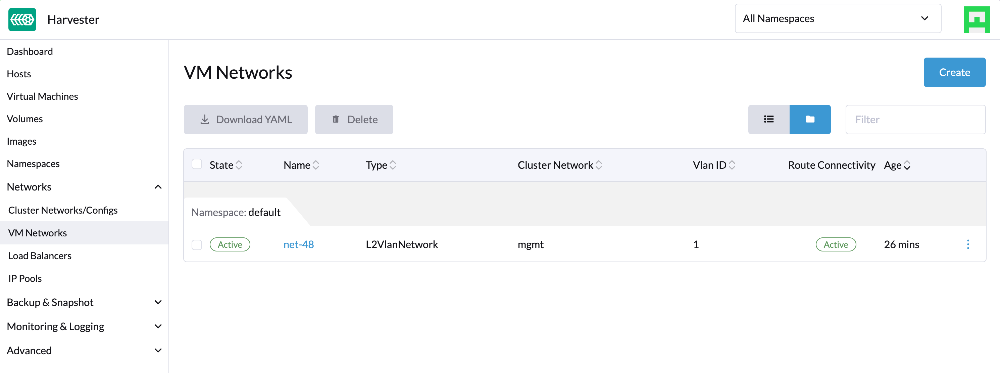
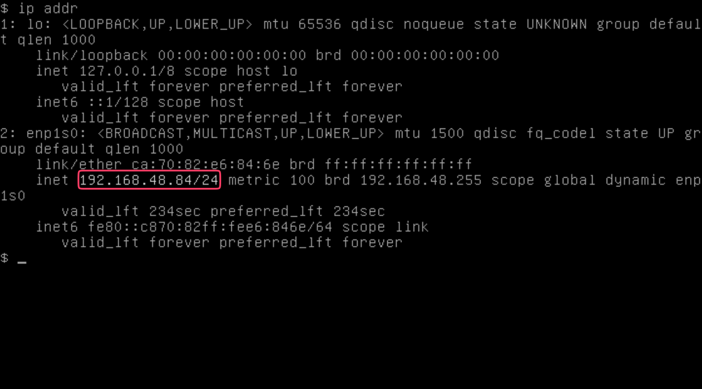

VM DHCP Controller (Managed DHCP)
You can configure IP pool information and serve IP addresses to VMs running on SUSE® Virtualization clusters using the embedded Managed DHCP feature. This feature, which is an alternative to the standalone DHCP server, leverages the vm-dhcp-controller add-on to simplify guest cluster deployment.
|
SUSE® Virtualization uses the planned infrastructure network so you must ensure that network connectivity is available and plan the IP pools in advance. |
Unique Features
-
DHCP leases are stored in etcd as the single source of truth across the entire cluster.
-
Each of the leases is static by nature and works well with your current network infrastructure.
-
The Managed DHCP agents can still serve DHCP requests for existing entities even if the cluster’s control plane stops working, ensuring that your virtual machine workload’s network remains available.
Limitations
-
The Managed DHCP feature only works with the network interfaces specified in the VirtualMachine CRs. Network interfaces created in the virtual machine are not supported.
-
IP addresses are not allocated or deallocated when you add or remove network interfaces after the virtual machine is created. The actual MAC addresses are recorded in the VirtualMachineNetworkConfig CRs.
-
The DHCP RELEASE operation is currently not supported.
-
IPPool configuration updates take effect only after you manually restart the relevant agent pods.
Install and Enable the vm-dhcp-controller Add-On
The vm-dhcp-controller add-on is not packed into the SUSE® Virtualization ISO, but you can download it from the experimental-addons repository. You can install the add-on by running the following command:
kubectl apply -f https://raw.githubusercontent.com/harvester/experimental-addons/main/harvester-vm-dhcp-controller/harvester-vm-dhcp-controller.yamlAfter installation, enable the add-on on the Dashboard screen of the SUSE® Virtualization UI or using the command-line tool kubectl.

Usage
-
On the Dashboard screen of the UI, create a VM Network.
 -
Create an IPPool object using the command-line tool kubectl.
cat <<EOF | kubectl apply -f - apiVersion: network.harvesterhci.io/v1alpha1 kind: IPPool metadata: name: net-48 namespace: default spec: ipv4Config: serverIP: 192.168.48.77 cidr: 192.168.48.0/24 pool: start: 192.168.48.81 end: 192.168.48.90 exclude: - 192.168.48.81 - 192.168.48.90 router: 192.168.48.1 dns: - 1.1.1.1 leaseTime: 300 networkName: default/net-48 EOF -
Create a VM that is connected to the VM Network you previously created.

-
Wait for the corresponding VirtualMachineNetworkConfig object to be created and for the MAC address of the VM’s network interface to be applied to the object.
-
Check the
.statusfield of the IPPool and VirtualMachineNetworkConfig objects, and verify that the IP address is allocated and assigned to the MAC address.$ kubectl get ippools.network net-48 -o yaml apiVersion: network.harvesterhci.io/v1alpha1 kind: IPPool metadata: creationTimestamp: "2024-02-15T13:17:21Z" finalizers: - wrangler.cattle.io/vm-dhcp-ippool-controller generation: 1 name: net-48 namespace: default resourceVersion: "826813" uid: 5efd44b7-3796-4f02-947e-3949cb4c8e3d spec: ipv4Config: cidr: 192.168.48.0/24 dns: - 1.1.1.1 leaseTime: 300 pool: end: 192.168.48.90 exclude: - 192.168.48.81 - 192.168.48.90 start: 192.168.48.81 router: 192.168.48.1 serverIP: 192.168.48.77 networkName: default/net-48 status: agentPodRef: name: default-net-48-agent namespace: harvester-system conditions: - lastUpdateTime: "2024-02-15T13:17:21Z" status: "True" type: Registered - lastUpdateTime: "2024-02-15T13:17:21Z" status: "True" type: CacheReady - lastUpdateTime: "2024-02-15T13:17:30Z" status: "True" type: AgentReady - lastUpdateTime: "2024-02-15T13:17:21Z" status: "False" type: Stopped ipv4: allocated: 192.168.48.81: EXCLUDED 192.168.48.84: ca:70:82:e6:84:6e 192.168.48.90: EXCLUDED available: 7 used: 1 lastUpdate: "2024-02-15T13:48:20Z"$ kubectl get virtualmachinenetworkconfigs.network test-vm -o yaml apiVersion: network.harvesterhci.io/v1alpha1 kind: VirtualMachineNetworkConfig metadata: creationTimestamp: "2024-02-15T13:48:02Z" finalizers: - wrangler.cattle.io/vm-dhcp-vmnetcfg-controller generation: 2 labels: harvesterhci.io/vmName: test-vm name: test-vm namespace: default ownerReferences: - apiVersion: kubevirt.io/v1 kind: VirtualMachine name: test-vm uid: a9f8ce12-fd6c-4bd2-b266-245d8e77dae3 resourceVersion: "826809" uid: 556440c7-eeeb-4daf-9c98-60ab39688ba8 spec: networkConfig: - macAddress: ca:70:82:e6:84:6e networkName: default/net-48 vmName: test-vm status: conditions: - lastUpdateTime: "2024-02-15T13:48:20Z" status: "True" type: Allocated - lastUpdateTime: "2024-02-15T13:48:02Z" status: "False" type: Disabled networkConfig: - allocatedIPAddress: 192.168.48.84 macAddress: ca:70:82:e6:84:6e networkName: default/net-48 state: Allocated -
Check the VM’s serial console and verify that the IP address is correctly configured on the network interface (via DHCP).

vm-dhcp-controller Pods and CRDs
When the vm-dhcp-controller add-on is enabled, the following types of pods run:
-
Controller: Reconciles CRD objects to determine allocation and mapping between IP and MAC addresses. The results are persisted in the IPPool objects.
-
Webhook: Validates and mutates CRD objects when receiving requests (creation, updating, and deletion)
-
Agent: Serves DHCP requests and ensures that the internal DHCP lease store is up to date. This is accomplished by syncing the specific IPPool object that the agent is associated with. Agents are spawned on-demand whenever you create new IPPool objects.
The vm-dhcp-controller introduces the following new CRDs.
-
IPPool (ippl)
-
VirtualMachineNetworkConfig (vmnetcfg)
IPPool CRD
The IPPool CRD allows you to define IP pool information. You must map each IPPool object to a specific NetworkAttachmentDefinition (NAD) object, which must be created beforehand.
|
Multiple CRDs named "IPPool" are used in the SUSE® Virtualization ecosystem, including a similarly-named CRD in the |
Example:
apiVersion: network.harvesterhci.io/v1alpha1
kind: IPPool
metadata:
name: example
namespace: default
spec:
ipv4Config:
serverIP: 192.168.100.2 # The DHCP server's IP address
cidr: 192.168.100.0/24 # The subnet information, must be in the CIDR form
pool:
start: 192.168.100.101
end: 192.168.100.200
exclude:
- 192.168.100.151
- 192.168.100.187
router: 192.168.100.1 # The default gateway, if any
dns:
- 1.1.1.1
domainName: example.com
domainSearch:
- example.com
ntp:
- pool.ntp.org
leaseTime: 300
networkName: default/example # The namespaced name of the NAD objectAfter the IPPool object is created, the controller reconciliation process initializes the IP allocation module and spawns the agent pod for the network.
$ kubectl get ippools.network example
NAME NETWORK AVAILABLE USED REGISTERED CACHEREADY AGENTREADY
example default/example 98 0 True True TrueVirtualMachineNetworkConfig CRD
The VirtualMachineNetworkConfig CRD resembles a request for IP address issuance and is associated with NetworkAttachmentDefinition (NAD) objects.
A sample VirtualMachineNetworkConfig object looks like the following:
apiVersion: network.harvesterhci.io/v1alpha1
kind: VirtualMachineNetworkConfig
metadata:
name: test-vm
namespace: default
spec:
networkConfig:
- macAddress: 22:37:37:82:93:7d
networkName: default/example
vmName: test-vmAfter the VirtualMachineNetworkConfig object is created, the controller attempts to retrieve a list of unused IP addresses from the IP allocation module for each recorded MAC address. The IP-MAC mapping is then updated in the VirtualMachineNetworkConfig object and the corresponding IPPool objects.
|
Manual creation of VirtualMachineNetworkConfig objects for VMs is unnecessary in most cases because vm-dhcp-controller handles that task during the VirtualMachine reconciliation process. Automatically-created VirtualMachineNetworkConfig objects are deleted when VirtualMachine objects are removed. |